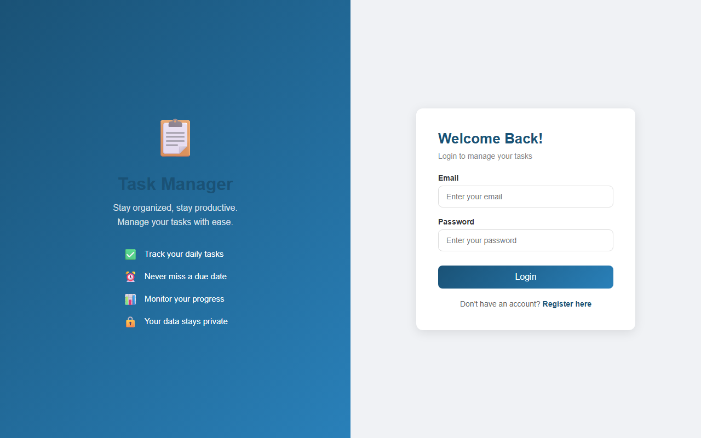
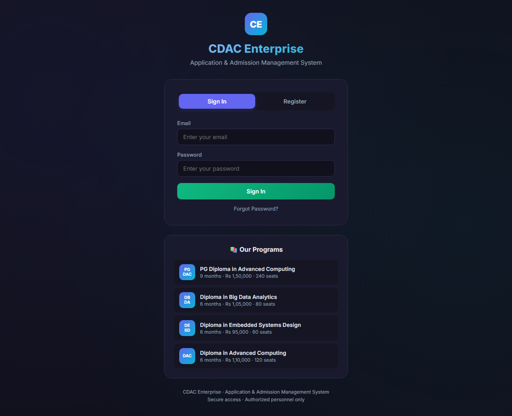
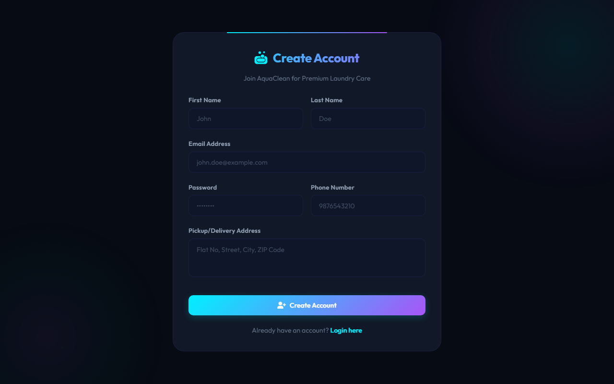
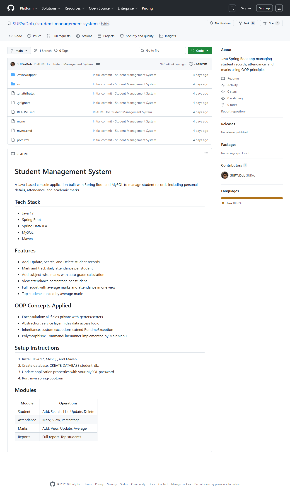

Full Stack Java Developer | Spring Boot & MySQL Specialist
A passionate developer dedicated to building impactful software solutions with clean, scalable code.
I'm a CDAC-certified Full Stack Java Developer with a strong foundation in Java, Spring Boot, Spring MVC, Hibernate, and MySQL. I specialize in building scalable, efficient, and user-friendly web applications using MVC architecture and responsive design principles.
With a Master's degree in Computer Science and hands-on experience across multiple full-stack projects, I bring both academic rigor and practical problem-solving skills to every development challenge. I'm proficient in Core Java, Collections, JDBC, Servlets, Thymeleaf, REST APIs, Git, and Maven.
Technologies and tools I work with to bring ideas to life.
Full-stack applications built with Java, Spring Boot, and modern technologies.

A full-stack task management system with user authentication, role-based access control, and CRUD operations for tasks and projects. Built with Spring Boot MVC architecture, JPA repositories, and MySQL.

A responsive institutional website with backend logic, MySQL database integration, and modular MVC architecture for efficient workflow management and data persistence.

A web-based operational workflow system for managing laundry orders, customer records, billing, and order tracking with full CRUD functionality and JDBC integration.

A console-based application for student data management using JPA repositories with custom JPQL queries and a normalized MySQL relational database schema.
My journey in computer science and software development.
Professional experience in software development.
Key accomplishments and milestones in my journey.
CDAC Certified — IACSD Akurdi
Master's in Computer Science
Full-stack applications delivered
Academic journey in CS
Professional certifications and achievements. Click to preview.
Credential details